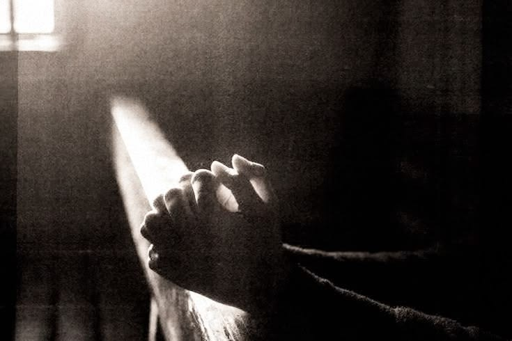
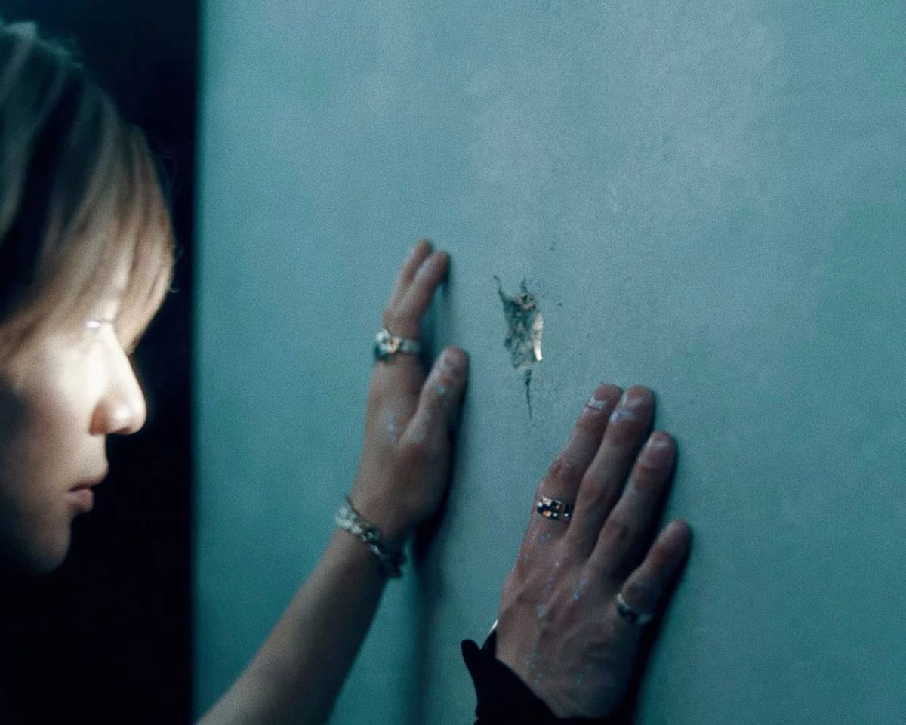
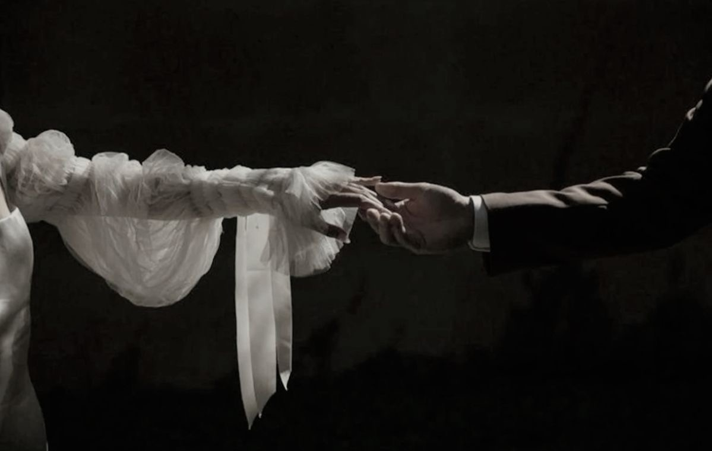
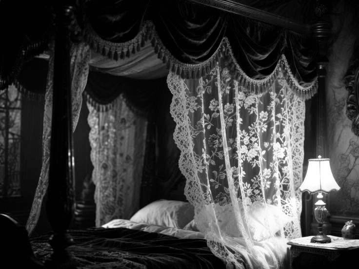
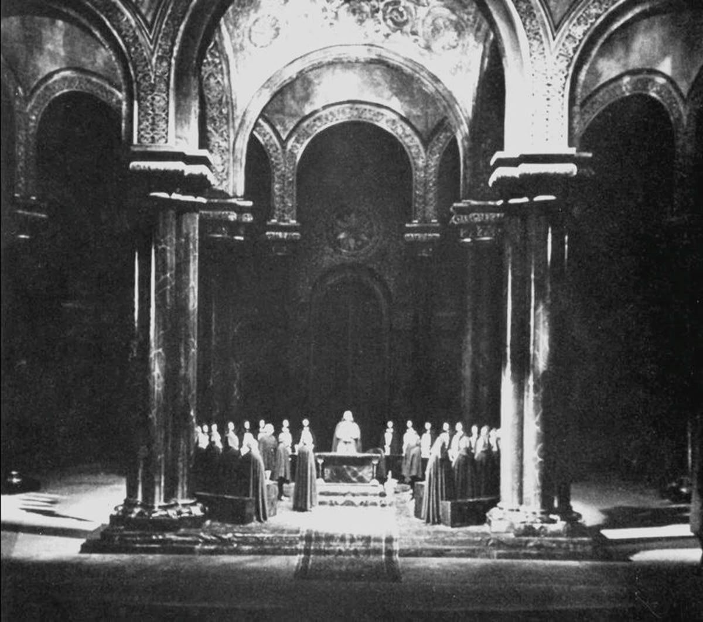

What follows has been assembled from fragments: sealed ecclesiastical minutes, medical observations excised from the infirmary books, witness statements later repudiated, and passages of personal testimony whose authorship cannot be confirmed.
The Order maintains that no such persons existed.
The Archive maintains otherwise.
Take heed. Certain pages were found stained. Certain names return even after the ink is scraped away.
The Vessel
Recovered exhibitA-11 · likeness contested
Designation
Vessel A-11
Name (revealed)
Sacha
Status in the ledgers
Consecrated. Afterwards accursed.
He was not found in a cradle.
He was found in the lower districts, where the hauntings had ceased to be rumour.
Dead tongues in the small hours. Shadows crossing thresholds without bodies.
The Order’s men came upon him in the ash beside a burned cot. They lifted him out.
He did not cry.
He watched them—listening for a voice among theirs.
They saw, in that stillness, a rare capacity: a body the devils might speak through without first tearing the host asunder.
They did not cast him out.
They brought him into the sanctum and named him not by any name a mother might have given, but by function.
Vessel A-11.
He did not speak save when spoken through.
His body obeyed.
They watched his sleep and called the emptiness a miracle. When he woke in tongues no seminary taught, the priests knelt—not for him, but for what had chosen him as mouthpiece.
Oil upon the ribs. Sigils upon the hollow of the throat. Told, gently and without cruelty, that he had been spared for a purpose higher than the mortal lot.
Thus he grew—not into a man, but into an instrument.
Polished. Sharpened. Kept.
From boyhood he beheld what the Order would not name: a figure at the edge of vision, patient as weather. They taught him to call it temptation. He named it not aloud.
If ever he bore another name before the Order claimed him, no record of it survived his consecration.
When the Anomaly was appointed unto removal, it was Vessel A-11 they sent.
The Archive notes, in a later hand: not the first sending. Not the first failure.
He went without question.
He returned bearing a name.
Sacha.
The blood-oath did not break all at once.
It began to thin.
The Anomaly
UnclassifiedSubject · prior entries redacted
Designation in Order records
The Anomaly
Name (unconfirmed / contested)
Zenon
Classification
Incomplete. Repeatedly revised. Never resolved.
The Holy Order has categories for nearly all that moves against the divine order: possession, false prophecy, residual haunting, unclean death, the restless dead, the thrice-damned.
Zenon fit none of them.
He was not evil.
That was the trouble.
Evil can be fought. Evil has a shape. Evil answers to prayer—by resisting, by shrieking, by showing what it is.
Zenon did none of these things.
He existed.
That was the trespass.
Witnesses could not agree. A man at the edge of rites older than the Church. A figure present where no invitation had been given. Rain upon stone. No proper shadow. One observer wrote only: Pulse present. Gaze present. Origin absent.
Seven years they laboured to classify him.
What cannot be classified cannot be governed.
What cannot be governed must be removed.
The Anomaly.
No record shows him demanding worship, blood, or salvation. Only this: he watched the Vessel as one watches a locked room at last opened.
Marginalia in the sealed folio, in a hand the Archive cannot date, reads: They have met before. They have died before. And he is the returning.
The Order saw the watching. They knew what it might become.
They chose their finest vessel to end it.
The Ritual
Source: Partial reconstruction from a suppressed liturgical folio (pre-Order provenance) and the testimony of three attending clergy, later expelled for speaking of the rite.
The rite predated the Church.
How much older remains disputed. Certain verses predate the Order’s founding by centuries. Certain gestures appear in no sanctioned sacrament. The folio recovered from the sealed library speaks of desire and flesh beside prayer and severance—as if the flesh were not obstacle to the holy, but passage.
The Church nevertheless made use of it.
They believed proximity was required. To kill what cannot be classified, one must first draw it near enough to touch. The Vessel would open himself. The Anomaly would answer. In that answering, the blade would find him.
Such was the design. What answered the rite was another matter.
They prepared Sacha according to the old rite: fasting, oil, scarlet thread at the wrists. They set him in the circle. The priests kept outside it.
When the Anomaly came, he did not arrive as spectacle.
He arrived as a man stepping into a room that had been waiting for him longer than either of them had lived.
Rite fragmentTethered
The ritual turned inward.
No chronicle agrees on the precise moment. One priest wrote that the candles bent toward Sacha, their flames bowing as if before a presence greater than the altar. Another wrote that the air thickened until speech became labour. A third—whose account was nearly destroyed—wrote only that the spirits inhabiting the Vessel were violently cast aback, as though the flesh had borne witness to a sin Heaven itself would not suffer.
Something answered.
Not the Church’s God. Or not only Him.
A tether formed.
Blood appointed unto the Anomaly spilled from the Vessel instead. The Anomaly looked upon him with a softness more dreadful than God’s wrath. Sacha knew not the face, yet something beneath his ribs tore open. His waking self held no memory—
His flesh did.
He leaned toward him.
Why, he knew not.
Sacha had been sent to kill.
Then the answering took hold. When the circle broke, they found him bleeding upon the stone—his own blood, newly his, upon wounds no rite had ever permitted him to bear.
They bore him out between them. He was not walking.
Yet upon his lips, before sense returned, a name.
Zenon.
He spoke it once on the sanctum threshold—to prove whether his mouth was yet his.
The priests heard.
They would try to scrape it from him as one scrapes mould from holy stone.
They failed.
The Fall
Source: Infirmary observations; disciplinary minutes of the Inner Chapel; unsigned scrap found beneath the Vessel’s sleeping pallet.
When Vessel A-11 returned from the rite, the change was not recorded as heresy.
It was classified as contamination.
He spoke unbidden. He flinched from the oil. Once—quietly—he asked whether the Anomaly had fallen.
More damning than any of this:
He remembered.
The Vessel was to bear no visions of the rite. They were to leave no mark upon him. Instead, he laid the encounter up in his heart, a wound kept beneath the hand lest it open.
They put him in the lower sanctum.
The Order preferred language that preserved its conscience. They called it restoration.
Sigils on the spine. Speech compared to glossaries. Exorcisms at dawn. They denied him the name. They told him the Anomaly had stolen what belonged to God.
Sacha knelt. He recited. He took the bitter waters. He let them touch the marks.

RestorationNothing answered
At night he mouthed one word into the dark, over and over—afraid it would leave if he stopped.
By day his body refused what it had always taken.
Bread stuck. The cup went untouched. When the hall said Amen, his mouth stayed shut. His eyes kept finding the corners.
The corners did not sit right.
He startled at footsteps that were not there. They found him barefoot in the dark, staring at the place where it stood. They asked. He pointed—furious that they could not see.
Then he began to look for a way out.
Locks. Guards. Mortar. Keys. He paced until dawn.
The flesh left him. Wrists went to bone. His hands shook until the nails split the palms and left dark crescents upon the linen.
Some mornings he woke already moving—on his feet before he knew he had risen, searching the dark with bleeding hands.
Once a priest reached for his shoulder. Sacha struck him hard enough to split the lip. Then recoiled—stared into the dark behind him.
Nothing there.
Then he remembered.
The figure had always been there. Beyond the pillars. At the end of the nave. At the foot of his pallet.
Now it had a face.
The Anomaly.
He watched during prayer. He listened through the night.
He could not make sense of any of it. Only that it would not leave him alone—and that he could not bear it, and could not stop.

Unauthorized SearchA face at last
He had been made for its death.
Yet still he waited—night after night—until waiting became the only prayer he had left.
He had begun to fear the nights it did not come.
That was the fall.
The Voices
Source: Fragmentary; partly reconstructed from the Vessel’s own later testimony, partly from night-watch reports that contradict one another.
The spirits returned.
The Order rejoiced. The Vessel was speaking again as the rites required: languages without teachers, prophecies without warmth. The priests deemed it recovery. They lit candles of thanksgiving.
The voices that returned were not the voices that had left.
They had learned him: where his mind wandered. The name he guarded. The particular cadence of Zenon’s speech—how it gentled without asking. And because they were spirits of habitation, they did what such things do when threatened with idolatry:
They wore the rival.
False likenessVessel compromised
It began without warning.
Zenon’s halo in an empty corridor—then gone. His weight against Sacha’s shoulder at the oil. His whisper under chapel water, as if the font had become a mouth.
Sacha turned. No one there.
He turned again. Sometimes someone was.
Sleep and waking bled. Wet sleeves. No memory of the basin. The well-stair at hours he was forbidden to walk. Black water, and under it a certainty that needed no words:
Zenon was underneath. Lean far enough, and the Abyss would give him back.
InterceptedSpeaker unverified
He leaned as a man leans into a kiss.
More than once.
Hands hauled him up coughing. The Order wrote ecstatic episode. They wiped the ledgers clean and left the water in his lungs.
Dream put Zenon in the pew. Waking put him there too—smiling with someone else’s eyes. Sacha reached. Air. Reached again. Fingers. He could not tell the shepherd from the wolf, and no longer wished to.
The spirits did not torment him with spectacle.
They courted him with his own longing.
When the Inner Chapel judged him too volatile to finish the mission, they did not cast the spirits out.
They left him to it.
A Vessel who still spoke was useful.
A Vessel walking himself toward the water was convenient.
The Order called it grace.
Sacha called it Zenon.
Neither was true.
The Mirage
Classification: Unmapped. Unreachable by pilgrimage. Appears only at threshold states.
There is a place the Order’s maps do not admit.
No road. No parish. No stone a priest can claim.
Seek it on purpose and you find only the ordinary world—unchanged, faintly insulted by your wanting.
It appears when Sacha is near dying.
It finds him unconscious.
Or otherwise standing at the thin place between one kind of breath and another.
A door in a wall that had none. A room lit from under the floorboards. A bar that smells of smoke and rain, with no closing hour. Once—only a house. Small. Warm. As if someone had imagined shelter hard enough for walls to thicken.
Zenon is always there.
Not vision.
Presence.
UnmappedAppears only at thresholds
No sacred walls enclosed him. No oil. No measuring of devotion. No God waiting to be fed his obedience. Zenon washed blood from his hands. Bound wounds Sacha could not remember enduring. Put bread in his hands. Kept watch while he slept.
In that room his faith came loose—not in a single blasphemy, but in the ruin of being received without having to earn it on his knees.
The first times, Sacha arrived involuntarily—dragged by fever, by rite, by the body’s collapse under the Order’s corrections. He woke to mercy he had not requested and did not know how to refuse.
Later, the arrivals changed.
He began to study the gaps. Notes, then ledgers: dates, symptoms, places he woke, fragments of speech recorded by others. He questioned the night-watch. He searched discarded reports. Where memory failed, he built an archive of his own remnants.
He learned the signs that came before the forgetting—the tilt of light, the hush before the door, the dread that settled over him like a held breath. Beyond that threshold his mind broke.
Still he followed it.
He woke without the face. He put the face back together from whatever the night had left him. By evening it was gone again.
The Mirage became somewhere he returned to by will: not because he could hold what waited there, but because he could no longer bear a world that asked him to kneel for less.
The Archive marks this carefully.
Not rebellion spoken aloud. Not doctrine overturned in the chapel.
Only this: a man taught to yield himself entirely, choosing the one place where worship was not required of him—and the one figure for whom he was beginning, without understanding why, to lose his God.
Whether the Mirage was haven, shared hallucination, or mercy, the records do not agree.
He only prayed—quietly, heretically—that when he opened his eyes, Zenon would still be there. He woke instead to the shape of a man cut out of him—exact as a wound, empty as a report with the name redacted.
His Voice
Source: Personal testimony attributed to Sacha; authenticity contested by the Order, preserved by the Archive.
He did not fall in love cleanly.
He fell the way a fever takes a body: first tremor, then burn, always worse at night.
In the Mirage, Zenon had no sanctified light. The Order had never raised him among the angels. The spirits had once set a halo on him to coax Sacha toward the water—and under it—and something in Sacha’s sight never quite let go. Wherever Zenon stood, the light seemed to bloom at the edges of him, turning his hair softly gold, as though some old photograph had caught him wrong. A sweet defect.
He listened reverently. Zenon’s ordinary voice—Will you drink? Does it hurt still?—became a private liturgy. When Sacha answered, his words were scarce. Chosen. They held.
More often, he turned to the ledgers.
Dates. Fragments. The exact hush Zenon used for sleep. Rain against the roof. A joke half-caught. Ink darkened his cuticles. Pages gathered like a second scripture. If morning meant forgetting, night became evidence. He wrote until his hand cramped—until even Zenon’s quiet amusement could not draw him from the page.

UnsanctionedProof against morning
Lying beside him after the long hours, Sacha tried to keep the sweet nothing—Zenon’s breath, the weight of an arm, a thumb at his temple—while sleep pulled at it. Furious at his own eyelids.
Zenon caressed the ink-stained knuckles.
Sacha said he did not want to forget. Said it into Zenon’s throat. Said the pages were the only way to keep him. His hands left black fingerprints on Zenon’s shirt.
Zenon took the pen.
He began to write in the ledger too—short lines, steady, disarmingly mundane: ate, slept against me, asked about the rain, said my name correctly. As if two hands might outpace the blank.
Sacha watched Zenon’s bent head and felt his chest ache.

Mirage chamberEntangled
He leaned in until Zenon’s face filled the world—room gone, ledgers gone, morning gone.
Half-asleep, Sacha kissed him in slow light—overbright, edge-soft, Zenon all halo and heat—as if an angel had leaned close enough to blur. He rose into it until there was almost nothing left of him but warmth vanishing into Zenon’s.
Zenon said his name into the kiss.
Sacha.
Gold flared. For a moment even forgetting held still.
The Heresy
Source: Doctrinal commentary of the Inner Chapel; annotations in a later hand. The Archive cannot swear whose.
He went in pieces.
Visions remained when bread would not. A face at the edge of sight. Gold upon a stranger’s hair. Rain upon a roof no parish owned. The old vacancy held the rest—only now the church looked into it and was afraid.
Thus was the Vessel reckoned as the unclassified are reckoned.
Some beheld evil seated in the flesh. Some beheld pity: A-11, defiled since the night of the rite, a child undone by the Anomaly. Both gazes found him. Neither asked what he wanted.
He was led—chapel, corridor, cell—and often could not say by what path he had come. Within these walls he became again what they had fashioned: a Vessel broken that would not feed, though they had ordained him to Body and Blood; a breast that kept its grief as a cistern keeps bitter water.

Rite of DeliveranceVessel named sinner
Then was appointed the Rite of Deliverance.
He endured.
Oil and inventory. The long abrasion meant to restore the instrument. What remained was yet of no use—vision-stained, grieving, answering still to a pull that answered not to them.
UnpurgedNumber retired · do not inquire
Wherefore the Inner Circle put him out.
Not the loud among them—those of quieter conscience, who had ceased to call the rite purification. It was the priest who had tended him: the same who reached for his shoulder in the lower sanctum and took the blow that split his mouth. Whether it was he who first bore witness against the Vessel, the ledgers only hint. A later hand—careful, clerical, too near the matter—survives in the margins of this folio. He led him beyond the Order’s claim. There they left him to his own devices, already written accursed, rather than keep a living caution at their table.
The priest closed the gate.
Sacha did not look back.
Years of Delirium
Also called, in marginalia: The Adultery. Duration: uncertain. Time in the Mirage does not keep honest accounts.
What followed cannot be reduced to sin or salvation without doing violence to both.
For a span of seasons—or years, or a single stretched night the body mistook for years—they lived inside the Mirage as if the spirits, the Order, and the God had all agreed to look away. They became, against every law written for either of them, one flesh.
The bed went soiled. Mouths that bruised. Hands that did not ask. No one led. No one lay down to be kept. What came of them darkened the linen: sweat, wine, blood from a scar torn open in the taking. He did not clasp his hands as before the altar, waiting on mercy. He used the body the Church had called God’s as if Heaven were watching, and meant it to. Zenon’s name where a psalm belonged. Pleasure without penance. A laugh in the kiss when it hurt.
Some nights the chamber went almost Edenic—warm air, impossible light, the suggestion of palms where no parish had ever planted them—and they took each other under that false paradise as if speed itself might outrun the ending. It would not last. He knew. He held tighter. Wrote himself into Zenon the only way he trusted: mouth, memory, the small repeated name made difficult to forget.
Time went wrong around them. Seasons like breaths. A night that swallowed years. Through the distortion he remained. That was the one thing the Mirage could not unmake.
Then the quieter hours, which were worse.
Hunger without blessing. Zenon humming at mended cloth. Sacha’s reluctant smile. Tenderness arrived late, unarmed.
Sacha told, in pieces: visions of him since boyhood; the same stick-figure, over and over, a child with a sword standing over evil; and under that drawing, always, Zenon torn on the blade, Sacha’s hand on the hilt. He had been afraid of the figure before he had a name for it. Zenon listened without doctrine. Once he admitted he did not know what he was—only that he had found Sacha across more than one ending, and feared not death, but being the reason Sacha could never be his alone.
Mirage plateBetrothal · date unknown
On some nights there was no question. Only Zenon. On others he woke sick—whether need had been seeded, whether love would survive if the cord were cut. Zenon could not answer. After those nights Sacha touched him as if he might vanish. He slept worse.
The spirits hated this season most of all. Zenon was giving Sacha a soul. They trespassed upon it. Seeded tenderness into hours that had never been lived. Memories that wore Zenon’s face.
Sacha would speak of a night, a word, a touch. Behind his eyes, something lost, still looking. Zenon would stare, uncomprehending. It had not happened. Then the agony: that he could hold Sacha through the night and still fail him. The spirits had been in the hours. All his keeping had not kept Sacha from their hands.
Sacha would wake beside the real man and still not know which mouth had been his in the dark.
Zenon spoke the vows.
Sacha heard them. Then he put him under—no warning, no leave, hands already in his hair, as if the words had been a dare. The water took them both.
A likeness would have broken. Begged. Died on cue.
Zenon found Sacha’s fingers under water, drew them into his mouth, and took.
Fever plateHe smiled as he sank
When they broke the surface, Sacha’s hands were gentler than the water had been. He said the name into wet hair. His wedded one. Now certain.
These years are remembered as delirium not because they were false, but because love and warfare used the same mouth—and the sanctioned world does not forgive such comparisons.
The Purge
Source: Medical debris; bloodied cloth catalogued as “unidentified penitent refuse”; testimony recovered from Sacha in fever.
There comes a point in certain suffering where the sufferer concludes that the only remaining enemy is the self that can still be occupied.
Sacha reached it.
If the Vessel died, he reasoned in the broken logic of the nearly destroyed, the voices might die with it. If the voices died, he might finally know which Zenon had been real. If he knew that, he might know whether love had been choice or mechanism. The tether might sever. The question might end.
He began to perform forbidden rites alone.
He fasted past the Order’s sanctioned hunger into something closer to erasure. He prayed until the words abraded his mouth. He cut—carefully at first, then with the grim competence of a man who has watched priests mark sacred flesh and learned the grammar of the blade. He attempted purifications no longer listed in any book. He attempted to cast out what lived in him. He attempted, with shaking hands and a scholar’s desperation, to cut the tether as if it were cord and not mystery.
Forbidden RitePurged flesh · tether remained
Every attempt brought him nearer to death.
The bodily record of this season is not sparse. Burns along the forearms where oil was heated beyond ritual need. Bruises without witnesses. A mouth that bled from biting down on prayer. Clothing stiffened dark. Fevers that smelled of metal. Injuries he could not account for upon waking—as if the spirits, or his own hands, or both, continued the work while consciousness failed.
Zenon found him.
Again.
And again.
He gathered Sacha from floors and thresholds and the edges of the Mirage’s light. He cleaned blood from skin as if cleaning were a vow. He pressed water to Sacha’s lips. He said, not as command but as plea disguised as calm: Stay. Breathe. I have you.
This is where love darkened without becoming cruelty.
Sacha began to resent him.
Not because Zenon was unkind. Because Zenon’s mercy kept interrupting the one escape Sacha believed remained. Because being saved began to feel like another cell with softer walls. Because he could not tell whether Zenon’s hands were freedom’s proof or the tether’s favourite argument.
He hated needing him.
He hated that Zenon could still reach him across any rite of self-destruction.
He hated—most of all—the traitorous relief that arrived each time he woke to that face and understood he had been returned to life against his unfinished will.
Let me go, he said once, or thought he said.
Zenon only held him, and the holding was unbearable because it was gentle.
In the catalogue of their tragedy, the Purge is not remembered as the season they stopped loving.
The Vessel BrokeGod did not call him home
It is remembered as the season love and captivity became, in Sacha’s mind, indistinguishable—and the spirits, wearing Zenon’s tenderness like a stolen coat, could hardly be blamed for smiling in the dark.
The Last Time
Source: Unverified. Possibly dream. Possibly the final true hour. The Archive files it under both.
Before the Mirage failed, there was an evening that survives in more than one account, as if even broken memory refused to surrender it entirely.
No rite. No blood. No argument about the tether.
Only this:
They ate. Something simple—bread, a broth Zenon had kept warm, fruit that should not have existed in a place without orchards. Sacha said something almost funny. Zenon laughed in that low, unguarded way that always made Sacha’s chest ache with the fear of waking. Later they lay together without urgency, as people do when the body has already told the truth and what remains is companionship.
Sacha spoke his own name aloud, testing it.
Zenon said, “I know,” as if that were the whole of theology.
For a little while Sacha forgot the Vessel. Forgot the Order’s oil and the spirits’ clever mouths and the question that had been eating the flooring out from under every tender hour. He was only a man in a room with another man, and the room was kind.
The Last RiteNeither knew
If the reader requires a place to grieve from, let it be here.
Not at the death.
Here—where nothing yet had been decided by violence, and the affair still contained enough ordinary sweetness to make the later silence blasphemous.
Toward the end of that night—or what passed for night in a place without honest clocks—Sacha asked the question he had been circling for seasons:
“If there were no tether… would you still—”
Zenon did not let him finish. Not to silence him. To answer before fear could renegotiate the terms.
“I would find you,” he said. “Even then.”
Whether this was truth, hope, or the last kindness one offers a drowning man, the Archive cannot say.
Sacha slept against him.
When he woke, much later, in another kind of dark, the Mirage was already beginning to thin—light going wrong at the edges, the walls remembering they had never been permitted to exist.
He did not know it was the last time.
That is how last times usually arrive:
Looking, almost cruelly, like safety.
Recovered StillLast known
Death of the Anomaly
Final folio. Handle as one handles a relic that may also be a confession.
The Mirage disappeared.
Sacha searched as a pilgrim searches for a shrine after the map has burned. He found no door. No wrong light. No bar between waking and sleep. No house that should not have stood. Only a rooftop—or a desolate height—or an abandoned sacred space the records describe inconsistently, as if the place itself refused a single name. Wind. Stone. The kind of open air that makes prayer feel overheard.
The spirits returned without procession.
They did not monologue. They had no need. Years of imitation had already done the finer work. They filled the height with uncertainty until Sacha could no longer hold the distinctions that keep a mind intact:
obedience from choice
memory from vision
Zenon from likeness
salvation from possession
love from dependence
the Church’s God from the thing that wore His silence
He was exhausted past theology.
Then Zenon appeared.
Perhaps.
He stood as he had always stood in the Mirage’s gentler rooms—no triumph, no threat—only the unbearable familiarity of a face Sacha had kissed in trust and doubted in fever and needed past the point of pride. He said Sacha’s name. Or something wearing him did. The mouth was right. The eyes were right. The space between them tightened with the old tether’s pull, or with love, or with both, and the difference would not declare itself.
Sacha killed him.
Final folioAfterward: silence
There is no clean sentence for this, so the Archive will not invent one.
What remains in the physical account is intimate and brief: the closeness of bodies; breath shared and then not; hesitation that lasted long enough to prove knowledge and not long enough to prevent the act; blood—hot, immediate—on hands already fluent in sacred wounding; Zenon’s face in the moment recognition and dying occupied the same expression. Sacha knew what he was doing. He did it anyway. The blade—or the hands—or the rite completed at last—found the place where an Anomaly becomes only a man who can end.
He believed, in that ruined clarity, that killing Zenon might sever the tether and reveal what was real.
If Zenon was the curse, then the murder was deliverance.
If Zenon was only a man, then Sacha had destroyed the only person who ever loved him without demanding that he become a vessel, a weapon, or a vacancy for God.
Both possibilities remain. The page does not choose.
When Zenon died, the voices stopped.
Not gradually.
Completely.
The prayers in him went out like candles pinched between fingers. The spirits ceased. The divine—whatever had spoken through him since childhood—fell silent as if offended, or finished, or never there. For the first time in his life, nothing inhabited Sacha but Sacha.
No triumph followed.
The silence was not freedom’s anthem. It was a room stripped of furniture, still smelling of those who had lived there. He stood in the wind with blood drying on his hands and understood that he had gotten what he asked for: a self with no other voice inside it.
The Archive does not record what he became after.
Only the final image survives, and it is quiet.
Empty.
A man alone on a height that may once have been holy, holding the absence of the one who taught him his name—